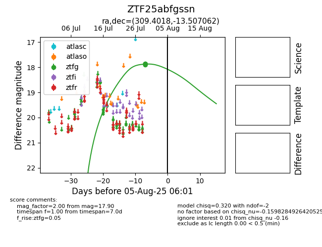

Target ZTF25abfgssn at 2025-08-05 06:01, see:
FINK: fink-portal.org/ZTF25abfgssn
Lasair: lasair-ztf.lsst.ac.uk/objects/ZTF25abfgssn
ALeRCE: alerce.online/object/ZTF25abfgssn
alt names
ZTF25abfgssn (ztf,fink)
coordinates:
equatorial (ra, dec) = (309.4018,-13.50706)
galactic (l, b) = (32.2900,-29.55122)
photometry
last ztfg=17.90
3 ztfg detections
